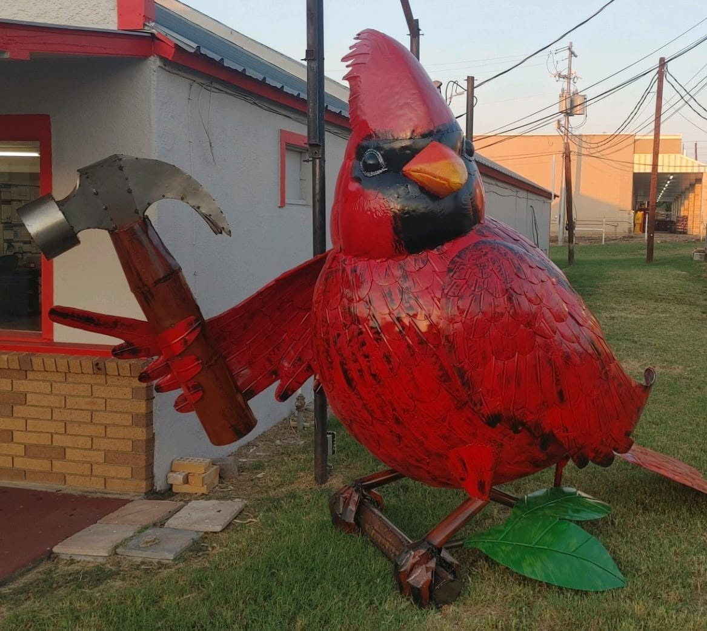

Roof Replacement
Complete tear off and replacement with a durable, great looking roof built for Texas weather.
From the first inspection to the final nail, Cardinal handles your roof and your insurance claim so you can get back to normal. Your total satisfaction is our cardinal concern.

Cardinal Roofing & Exteriors started in Round Rock in 2009 with one commitment: bring Central Texas the best roofing services possible. Founder John Clampitt spent years as a contractor and sales manager before building a company his family runs to this day.
We specialize in high performance, hail resistant roofing that protects your home and looks great doing it. When a storm rolls through, we walk you through the whole process, including the insurance claim.
Homes and businesses across Central Texas count on Cardinal for durable roofs and a complete exterior. Here is where most projects start.
Complete tear off and replacement with a durable, great looking roof built for Texas weather.
Expert repairs and upkeep that keep your roof in top shape and extend its lifespan.
Rapid response for leaks, missing shingles, and storm damage, with the claim handled alongside you.
Long lasting, energy efficient metal systems for homes and businesses that want to build once.
Siding, exterior painting, and Andersen certified window replacement to finish the whole exterior.
Installations, maintenance plans, and prompt repairs that keep your business protected and open.
After a Central Texas hailstorm, the roof is only half the job. The paperwork is the other half. Cardinal inspects the damage, documents it, and works your claim right alongside you so nothing falls through the cracks.
Our customers say it best: we take them from inspection, to the insurance claim, to repairs, and through completion, satisfied every step of the way.
We climb up, assess the roof and exterior, and show you exactly what we find.
We document the damage and work your claim with you so it is handled right.
Our crews install quality materials efficiently, on schedule and on budget.
We walk the finished job with you and clean up like we were never there.
Free, no pressure estimates for homes and businesses across Central Texas. Call today or send us a few details and we will take it from there.